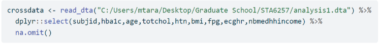
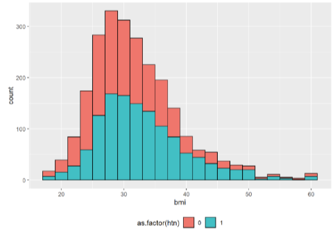
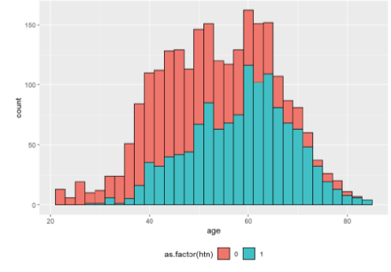
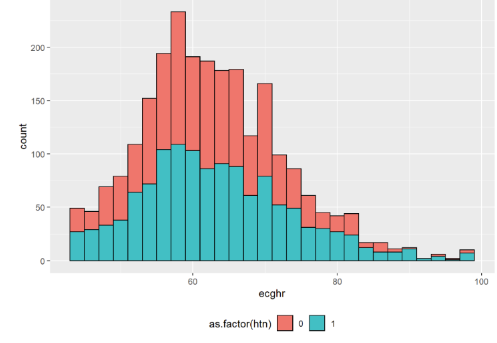

Data
We are working with data from the Jackson Heart Study. The goal of this study was to investigate the causes of cardiovascular, renal, and respiratory diseases in African Americans. Data was collected from approximately 5300 participants living in Jackson, Mississippi. (Jackson Heart Study)
Individuals in this study provided a thorough medical and social history and participated in a range of physical and biochemical tests and diagnostic procedures during a baseline examination that occurred during calendar years 2000-2004 and two follow-up examinations in 2005-2008 and 2009-2012 (www.jacksonheartstudy.org).

For this analysis, we chose 3 data elements from the dataset as our independent variables - age, bmi and ecghr. The dependent variable that we want to be able to predict is htn. The variable definitions are as follows:
A closer look at the data revealed some missing and NA values. These were addressed by including the na.omit in our select statement.



The histograms show that the distribution of bmi (Body Mass Index), age and ecghr (Heart Rate) based on htn (Hypertensdion Status) is symmetric. This indicates that the data we will use in our models are evenly distributed around the central value. In addition, our plots suggest only age is associated with increased prevalence of hypertension.